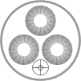

|
 |
VII/145 Nearby Galaxies Catalogue (NBG) (Tully 1988)
================================================================================
Nearby Galaxies Catalogue
Tully R.B
<Cambridge University Press (1988)>
================================================================================
ADC_Keywords: Galaxy catalogs ;
Description (Introduction of Catalog):
This compendium is a companion to the Nearby Galaxies Atlas (ref. 29;
hereafter NBG Atlas). Data has been accumulated on 2367 galaxies with
systemic velocities less than 3000 kilometers/second. Any galaxy was
admitted to the catalog if it had a known velocity in 1978 that
satisfied the specified limit of 3000 kilometers/second, or if it was
subsequently observed to have a suitable velocity in surveys of the
entire sky by the author and collaborators (ref. 6, 11, 22).
There are many sources of velocities, so this catalog could
potentially be quite heterogeneous. However, two sources dominate.
One of these is the magnitude-limited Shapley-Ames sample, which
assures the inclusion of all galaxies brighter than 12th magnitude in
the blue passband (ref. 25). There are 1053 Shapley-Ames galaxies
within the velocity limit. The other source was already mentioned: the
all-sky survey in the neutral hydrogen line by the author and
collaborators. This survey was undertaken after a complete
reinspection of photographic atlases of the sky. This survey was
insensitive to gas-deficient systems and has severe incompletion
problems at velocities beyond 2000 kilometers/second (discussed in
ref. 11). However, the virtue of our survey is homogeneous coverage
across the unobscured part of the sky. The neutral hydrogen survey
provides 1515 velocities to the catalog. There is some overlap
between the two principal sources. It is this cumulative sample that
is mapped in the NBG Atlas.
There are three parts to the catalog. The first and by far the largest
section (catalog) provides information about each of the 2367
galaxies. One element of that information is a group affiliation, and
in a second section (groups) there is a reordered listing that
clarifies the composition of each group. The final, very short section
(clusters) identifies the rich clusters of galaxies that delineate the
supercluster complexes mapped in the last two plates of the NBG Atlas.
The text of the atlas is written at a level that can be appreciated by
a wide audience. The material in this catalog and the following
description are of a more technical nature. This catalog is intended
for an audience of professional and motivated amateur astronomers.
File Summary:
FileName Lrecl Records Explanations
× 80 . This file
× ReadMe 80 . This file
× catalog.dat 328 2367 The Nearby Galaxies Catalog (NBG)
× groups.dat 48 2368 *Lists by groups
× clusters.dat 49 382 Identification of Rich clusters
Note on groups: this table contains all galaxies in "catalog", plus
our Galaxy (the Milky Way)
Byte-by-byte Description of file: catalog.dat
Bytes Format Units Label Explanations
1- 4 I4 --- NBG [1/2367]+ Running number
6- 13 A8 --- Name Galaxy Name (1)
15- 16 I2 h RAh Right Ascension 1950 (hours)
17- 20 F4.1 min RAm Right Ascension 1950 (minutes)
22 A1 --- DE- Declination 1950 (sign)
23- 24 I2 deg DEd Declination 1950 (degrees)
25- 26 I2 arcmin DEm Declination 1950 (minutes)
28- 29 I2 --- HubCode [-5/13] Morphological type code (2)
30- 31 A2 --- HubPec [BAXP ] Morphological peculiarities (2)
34- 38 F5.1 arcmin D25 ?=0 Observed diameter at 25mag/arcsec2
isophote in blue (3)
40- 44 F5.1 arcmin D25bi ?=0 Corrected diameter (4)
46 A1 --- r_D25bi [926451] Reference for D25bi (5)
48- 51 F4.2 --- d/D ]0/1]?=0. Axial ratio of minor to
major diameter (= 1/R25)
54- 56 F3.0 deg i inclination from face-on (6)
58- 62 F5.2 mag BTbi ?=0. Blue apparent magnitude adjusted
for reddening (7)
64 A1 --- r_BTbi [0127635] Source for blue magnitudes (8)
66- 70 F5.0 km/s RVel Heliocentric velocity
72- 74 I3 km/s e_RVel Mean error on RVel
76 I1 --- RefHI ]0/7]?=0 Reference to HI observation (9)
78- 82 F5.0 km/s V0 Systemic velocity (solar motion of 300km/s)
85- 90 F6.2 deg GLON Galactic longitude
92- 97 F6.2 deg GLAT Galactic latitude
99-104 F6.2 deg SGLON Supergalactic longitude as in RC2
106-111 F6.2 deg SGLAT Supergalactic latitude as in RC2
113-118 F6.2 mag MB ?=0 Absolute blue magnitude of galaxy
120-124 F5.2 mag m-M Distance modulus (5log(R)+25)
126-129 F4.1 Mpc R Distance, assuming H=75km/s/Mpc (10)
131-135 F5.1 kpc Delta25 ?=0 Linear diameter (0.292 . D25bi * R)
137-141 F5.1 Mpc SGX X coordinate in SuperGalactic frame
143-147 F5.1 Mpc SGY Y coordinate in SuperGalactic frame
149-153 F5.1 Mpc SGZ Z coordinate in SuperGalactic frame
156-160 F5.2 mag H-0.5bi ?=0 Apparent magnitude at 1.6um
adjusted for reddening (10)
162-166 F5.2 mag B-H color (note: different apertures in B and H)
168-171 F4.2 mag ABi0 Obscuration within candidate galaxy (10)
173-176 F4.2 mag ABb Obscuration within Milky Way
179-181 I3 km/s W20 ?=0 HI line width at 20% maximum (10)
182-184 I3 km/s e_W20 ?=0 Uncertainty on W20
186-188 I3 --- r_W20 [2/301]?=0 Source for W20 (11)
190-193 F4.0 km/s WR ?=0 Rotational velocity profile width
parameter (10)
195-198 F4.0 km/s WDi ?=0 Global velocity, dynamical profile
width parameter (10)
201-205 F5.2 [10+6solMass/Mpc2] logFc ?=-9.99 log of HI flux
adjusted for resolution effects
206-208 I3 % e_logFc ]0/100]?=0 Relative error on logFc
210-212 I3 --- r_logFc ?=0 Reference (source) for logFc (11)
214-217 F4.2 --- fH ?=0 Flux correction factor (12)
219-223 F5.2 [solMass] log(MH) ?=0 mass of HI (10)
225-229 F5.2 [solMass] log(MT) ?=0 Total mass of Galaxy (10)
231-235 F5.3 --- MH/MT ?=0 ratio of HI to total mass (16)
237-241 F5.2 [solLum] log(LB) ?=0 Intrinsic blue luminosity of galaxy (10)
243-246 F4.2 Sun MH/LB ?=0 ratio of HI to blue luminosity
248-252 F5.2 Sun MT/LB ?=0 Mass to blue luminosity ratio
255-258 F4.2 Mpc-3 rho ?=0 Density of galaxies (13)
260-267 A8 --- Group [ 0-9+-] Group affiliation (14)
270-275 A6 --- UGC/ESO Designation in UGC (number <= 12921) or ESO
277-285 A9 --- MCG designation in MCG (Ref. 35)
287 A1 --- inRC2 [2] '2' when the galaxy in RC2 (ref. 9)
289-328 A40 --- OtherNames Other names separated by a comma (15)
Note (1): Entries are identified, in order of priority, by a
NGC number (preceded by N), or by an UGC number (preceded by U),
or by a name constructed from equatorial coordinates. See also
other names in the four rightmost columns.
Note (2): the morphological type is given by a numeric code
that is slightly different from RC2 one
-5 E Elliptical
-3 E/SO Elliptical/Lenticular (classification uncertain)
-2 SO Lenticular
0 SO/a Lenticular/Spiral
1 Sa Spiral
2 Sab Spiral
3 Sb Spiral
4 Sbc Spiral
5 Sc Spiral
6 Scd Spiral
7 Sd Spiral
8 Sdm Spiral
9 Sm Spiral/irregular
10 Ir Irregular
12 S Spiral/irregular (classification uncertain)
13 P Peculiar
Following the morphology number is a "B" (bar), "A" (absence of
a bar), "X" (intermediate case), "P" (existence of a peculiarity)
Note (3): Conversions from diameters in the major catalogues are:
log(D25) = 0.983(D(UGC) + 0.3) - 0.051
log(D25) = 0.998(D(ESO) + 0.3) - 0.132
log(D25) = 1.020(D(MCG) + 0.3) - 0.007
Note (4): Diameter adjusted for effects of projection and obscuration.
Adjustments are made according to the equation
log(D25bi) = log(D25) - c log(d/D) + ABb.KD25, where
d/D is the ratio of major to minor diameter (=1/R25)
c = 0.22
ABb is the Galactic (Milky Way) absorption in blue
KD25 = 0.09
Note (5): Source of diameter in decreasing order of priority
9 = standards (ref.12)
2 = UGC (ref.20)
6 = ESO (ref.16)
4 = MCG (ref.35)
5 = BCG (ref.7)
1 ** unspecified
Note (6): The inclination is almost always given by
i = 3deg + acos(sqrt(((d/D)^2 - 0.2^2)/(1 - 0.2^2)))
Note (7): BTbi is computed from:
BTbi = BT - ABb - ABi0
Note (8): Source of blue magnitudes in decreasing order of priority:
1 = Holmberg (ref.14)
2 = RC2 (ref.9)
7 = deVaucouleurs (ref.8)
6 = miscellaneous
3 = CGCG (ref.36)
5 = Harvard (ref.7)
Note (9): The telescopes used are NRAO 91m and 43m,
the Max-Planck-Institut 100m and Parkes 64m, according
to the following code:
Code Telescope Resolution
1 91 22 km/s
2 43 22
3 91 5.5
4 43 5.5
5 100 5.5
6 100 22
7 64 4.9
Note (10): See also notes in the printed catalogue
Note (11): Hydrogen line width and Flux literature references
2 R.J. Allen, B.F. Darchy, and R. Lauque, A&A 10,198, 1971.
3 R.J. Allen, W.M. Goss, R. Sancisi, W.T. Sullivan, III, and
H. van Woerden. In "The Formahon and Dynamics of Galaxies",
IAU Symposium, no. 58, ed. J.R. Shakeshaft, p.425.
Dordrecht: Reidel, 1974.
5 C. Balkowski, L. Bottinelli, P. Chamaraux, L. Gouguenheim, and
J. Heidmann, A&A 34, 43, 1974.
6 C. Balkowski, L. Bottinelli, L. Gouguenheim, and J. Heidmann,
A&A 21, 303, 1972.
7 C. Balkowski, L. Bottinelli, L. Gouguenheim, and J. Heidmann,
A&A 23, 139, 1973.
10 L. Bottinelli, P. Chamaraux, L. Gouguenheim, and J. Heidmann,
A&A 29, 217, 1973.
11 L. Bottinelli, P. Chamaraux, L. Gouguenheim, and R. Lauque,
A&A 6, 453, 1970.
12 L. Bottinelli, R. Duflot, L. Gouguenheim, and J. Heidmann,
A&A 41, 61, 1975.
17 L. Bottinelli, L. Gouguenheim, and J. Heidmann, A&A 22, 281, 1973.
20 N. Carozzi, P. Chamaraux, and R. Duflot-Augarde, A&A 30, 21, 1974.
21 P. Chamaraux, J. Heidmann, and R. LauqueLA, A&A 8, 424, 1970.
24 R.D. Davies, and B.M. Lewis, MNRAS 165, 231, 1973.
25 J. E Dean, and R. D. Davies, MNRAS 170, 503, 1975.
36 L. Gouguenheim, A&A 3, 281, 1969.
41 W. Huchtmeier, A&A 17, 207, 1972.
51 B.M. Lewis, and R.D. Davies, MNRAS 165, 213, 1973.
54 W.H. McCutcheon, and R.D. Davies, MNRAS 150, 337, 1970.
56 S.D. Peterson, and G.S. Shostak, AJ 79, 767, 1974.
60 M.S. Roberts, AJ, 73, 945, 1968.
66 B.J. Robinson, and K.J. van Damme, Australian J. Physics, 19, 111, 1966.
67 B.J. Robinson, and J.A. Koehler, Nature, 208, 993, 1965.
69 D.H. Rogstad, I.A. Lockhard, and M.C.H. Wright, ApJ 193, 309, 1974.
72 D.H. Rogstad, and G.S. Shostak, A&A 22, 111, 1973.
76 R.R. Sholbrook, and B.J. Robinson, Australian J. Physics, 20, 131, 1967.
77 G.S. Shostak, ApJ 187, 19, 1974.
79 G.S. Shostak, ApJ 198, 527, 1975.
80 G.S. Shostak, and D.H. Rogstad, A&A 24, 405, 411, 1973.
96 E.E. Epstein, AJ 69, 490, 1964.
102 J.V. Hindman, F.J. Kerr, and R.X. McGee, Australian J. Physics,
16, 570, 1963.
105 L. Volders, and J.A. Hogbom, Bull. Astron. Inst. NL, 15, 307, 1961.
106 J. Heidmann, Bull. Astron. Inst. NL, 15, 314, 1961.
201 W.K. Huchtmeier, G.A. Tammann, and H.J. Wendker, A&A 46, 381, 1976.
202 W.K. Huchtmeier, G.A. Tammann, and H.J. Wendker, A&A 57, 313, 1977.
203 B. Balick, S.M. Faber, and J.S. Gallagher, ApJ 209, 710, 1976.
204 J.S. Gallagher, S.M. Faber, and B. Balick, ApJ 202, 7, 1976.
205 G.R. Knapp, J.S. Gallagher, S.M. Faber, and B. Balick, ApJ 82, 106, 1977.
206 A. Bosma, R.D. Ekers, J. Lequeux, A&A 57, 97, 1977.
208 D.A. Cesarsky, E.G. Falgarone, and J. Lequeux, A&A 59, L5, 1977.
209 P. Chamaraux, A&A 60, 67, 1977.
210 J.H. Bieging, and P. Biermann, A&A 6b, 361, 1977.
211 J.R. Dickel, and H.J. Rood, ApJ 223, 391, 1978.
212 R.J. Allen, J.M. van der Hulst, W.M. Goss, and W. Huchtmeier,
A&A 64, 359, 1978.
214 C. Balkowski, P. Chamaraux, and L. Weliachew, A&A 69, 263, 1978.
216 J.H. Bieging, A&A 64, 23, 1978.
217 G.S. Shostak, A&A 68, 321, 1978.
218 T.D. Kinman, V.C. Rubin, N. Thonnard, W.K. Ford, Jr., and
C.J. Peterson, ApJ 82, 871, 1977.
220 G.D. van Albada, A&A 61, 297, 1977.
222 A.J. Longmore, T.G. Hawarden, B.L. Webster, W.M. Goss, and
U. Mebold, MNRAS 184, 97P, 1978.
223 N. Krumm, and E.E. Salpeter, ApJ 227, 776, 1979.
225 K.Y. Lo, and W.L.W. Sargent, ApJ 227, 756, 1979.
226 T.X. Thuan, and P.D. Seitzer, ApJ 231, 327, 1979.
300 G. Helou, C. Giovanardi, E.E. Salpeter, and N. Krumm, ApJS 46, 267, 1981.
301 K. Reif, U. Mebold, W.M. Goss, H. van Woerden, and B. Siegman,
A&AS 50, 451, 1982.
Note (12): All HI observations by the author and collaborators were
single-beam measurements with a beam that is frequently smaller
than the size of the source. The corrections are discussed in Ref.11
Note (13): density of galaxies brighter than -16mag in the vicinity
of the entry. The local density was determined on a 3D-grid at
0.5Mpc spacing. See the details in the printed catalogue
Note (14): galaxies may be affiliated with other galaxies in groups,
associations, or clouds. The affiliations are described by a code
in the form AB±CD+EF :
a galaxy is located in cloud AB (see Note (1) in table "groups"),
group -CD or first level association +CD,
and second level association +EF.
Galaxies are ordered by group in table "groups"
Note (15): The alternative names are that date back before 1976 can be
found in BGC (ref.7) and RC2 (ref.9). More recent sources are designated
Arak = Arakelian (ref. 3)
CVndw = Lo and Sargent (ref.18)
Kar = Karachentseva (ref.15)
M81dw = Lo and Sargent (ref.18)
RMB = Rubin et al. (ref.24)
SAGDIG = Cesarsky et al. (ref. 5)
SCLDIG = Laustsen et al. (ref.17)
Scl = Rubin et al. (ref.23)
Turn = Turner (ref.32)
UGCA = Nilson (ref.21)
UKS = Longmore et al. (ref.19)
At the very end of this column there may be a notation that indicates
if the galaxy has a Seyfert(S) or LINER(L) active nucleus;
the number that follows specifies whether the type is 1, or 2,
or an intermediate case.
Note (16): is sometimes larger than 1 due to the different methods
for the computations of MH and MT
Byte-by-byte Description of file: groups.dat
Bytes Format Units Label Explanations
1- 8 A8 --- Group [ 0-9+-] Group identification (1)
13- 20 A8 --- Name Galaxy name, as in catalog
24- 25 I2 --- HubCode [-5/13] Morphological type code
26- 27 A2 --- HubBar [BAXP ]
31- 36 F6.2 mag MB ? Absolute blue magnitude of galaxy
37 A1 --- MWay [*] flag for our Galaxy
41- 45 F5.0 km/s V0 Systemic velocity
Note (1): the first two digits designate the Cloud, as follows:
11=Virgo Cluster and Southern Extension
12=Ursa Major Cloud
13=Ursa Major Southern Spur
14=Coma - Sculptor Cloud
15=Leo Spur
16=Centaurus Spur
17=Triangulum Spur
18=Perseus Cloud
19=Pavo - Ara Cloud
21=Leo Cloud
22=Crater Cloud
23=Centaurus Cloud
24=Lynx Cloud
31=Antlia - Hydra Cloud
32=Cancer - Leo Cloud
33=Carina Cloud
34=Lepus Cloud
41=Virgo - Libra Cloud
42=Canes Venatici - Camelopardalis Cloud
43=Canes Venatici Spur
44=Draco Cloud
45=Coma Cloud
51=Fornax Cluster and Eridanus Cloud
52=Cetus - Aries Cloud
53=Dorado Cloud
54=Antlia Cloud
55=Apus Cloud
61=Telescopium - Grus Cloud
62=Pavo - Indus Spur
63=Pisces - Austrinus Spur
64=Pegasus Cloud
65=Pegasus Spur
66=Sagittarius Cloud
71=Serpens Cloud
72=Bootes Cloud
73=Ophiuchus Cloud
Other (multiple of 10) are Isolated groups.
Byte-by-byte Description of file: clusters.dat
Bytes Format Units Label Explanations
1- 3 A3 --- SuperCl Complex/Supercluster designation (1)
5 A1 --- Flag [+*] See Note (2)
7- 17 A11 --- Cluster designation (Abell or Anonymous)
21- 26 F6.4 --- z Redshift
31- 35 F5.0 Mpc SGX X coordinate in SuperGalactic frame
38- 42 F5.0 Mpc SGY Y coordinate in SuperGalactic frame
45- 49 F5.0 Mpc SGZ Z coordinate in SuperGalactic frame
Note (1): the notation is A.B, where A designates a complex, and A.B
the Supercluster, as follows:
1 PISCES - CETUS SUPERCLUSTER COMPLEX
1.1 Pisces - Cetus Supercluster
1.2 Perseus - Pegasus Chain
1.3 Pegasus - Pisces Chain
1.4 Sculptor Region
1.5 Virgo - Hydra - Centaurus Supercluster
2 AQUARIUS SUPERCLUSTER COMPLEX
2.1 Aquarius - Capricornus Region
2.2 Aquarius Region
3 HERCULES - CORONA BOREALIS SUPERCLUSTER COMPLEX
3.1 Hercules Supercluster
3.2 Bootes Supercluster
3.3 Corona Borealis Supercluster
3.4 Corona Borealis - Hercules Supercluster
4 LEO SUPERCLUSTER COMPLEX
4.1 Leo Supercluster
4.2 Leo - Coma Supercluster
4.3 Sextans Supercluster
5 URSA MAJOR SUPERCLUSTER COMPLEX
5.1 Ursa Major Supercluster
5.2 Draco Supercluster
Note (2): the '*' indicates the cluster is in a sufficiently dense region
in the core of the complex that a pathway can be found to every other
cluster with an '*' in the same complex with cluster-to-cluster steps
of less than 40Mpc.
The '+' designates associations with the incompletely surveyed
Indus region.
References:
1. Aaronson, M., J. Huchra, J.R. Mould, R.B. Tully, J.R. Fisher,
H. van Woerden, W.M. Goss, P. Chamaraux, U. Mebold, B. Siegman,
G. Berriman, and S.E. Persson. ApJS 50, 241, 1982.
2. Aaronson, M., J.R. Mould, and J. Huchra, ApJ 237, 655, 1980.
3. Arakelian, M.A., Soobshcheniya Byurakanskoj Observatorii, 47, 3, 1975.
4. Burstein, D., and C. Heiles. ApJ 225, 40, 1978.
5. Cesarsky, D.A., S. Lausten, J. Lequeux, H.E. Schuster, and
R.M. West, A&A 61, L31, 1977.
6. Chamaraux, P., W.M. Goss, U. Mebold, R.B. Tully, and
H. van Woerden, unpublished.
7. de Vaucouleurs, G., and A. de Vaucouleurs. Reference Catalogue of
Bright Galaxies. Austin: University of Texas Press, 1964 (BGC).
8. de Vaucouleurs, G., A. de Vaucouleurs, and R. Buta.
AJ 86, 1429, 1981.
9. de Vaucouleurs, G., A. de Vaucouleurs, and H.G. Corwin, Jr. Second
Reference Cahlogue of Bright Galaxies. Austin: University of Texas
Press, 1976 (RC2).
10. Dreyer, J.L.E. New General Catalogue of Nebulae and Clusters of
Stars, 1888. Reprinted in Mem. R. Astron. Soc., 1962 (NGC).
11. Fisher, J.R., and R.B. Tully. ApJS 47, 139, 1981.
12. Fouque, P., and G. Paturel. A&AS 53, 351, 1983.
13. Fouque, P., and G. Paturel. A&A 150, 192, 1985.
14. Holmberg, E.B., Meddelande Lunds Obs., Series II, No. 136, 1958.
15. Karachentseva, V., Soobshcheniya Byurakanskoj Obs. 39, 61, 1968.
16. Lauberts, A., ESO/Uppsala Survey of the ESO(B) Atlas, Garching bei
Munchen (Germany): European Southern Observatory, 1982 (ESO).
17. Laustsen, S., W. Richter, J. van der Lans, R.M. West, and
R.N. Wilson. A&A 54, 639, 1977.
18. Lo, K.Y., and W.L.W. Sargent, ApJ 227, 756, 1979.
19. Longmore, A.J., T.G. Hawarden, B.L. Webster, W.M. Goss, and
U. Mebold, MNRAS 184, 97P, 1978.
20. Nilson, P., Uppsala General Catalogue of Galaxies. Uppsala, Sweden:
Societatis Scientiarum Upsaliensis, 1973 (UGC).
21. Nilson, P., Catalogue of Selected Non-UGC Galaxies, Uppsala
Astron. Obs. Rep. No. 5, 1974.
22. Reif, K., U. Mebold, W.M. Goss, H. van Woerden, and B. Siegman,
A&A 50, 451, 1982.
23. Rubin, V.C., W.K. Ford, Jr., N. Thonnard, M.S. Roberts, and
J.A. Graham, AJ 81, 687, 1976.
24. Rubin, V.C., S. Moore, and E.C. Bertiau, AJ 72, 59, 1967.
25. Sandage, A., AJ 83, 711, 1978.
26. Tully, R.B., ApJ 321, 280, 1987.
27. Tully, R.B., ApJ 323, 1, 1987.
28. Tully, R.B. AJ 96, 73, 1988.
29. Tully, R.B., and J.R. Fisher. Nearby Galaxies Atlas. Cambridge:
Cambridge University Press, 1987 (NBG Atlas).
30. Tully, R.B., and P. Fouque, ApJS 58, 67, 1985.
31. Tully, R.B., and E.J. Shaya. ApJ 281, 31, 1984.
32. Turner, E.L., ApJ 208, 20, 1976.
33. van den Bergh, S., ApJ 131, 215, 1960.
34. van den Bergh, S., AJ 71, 922, 1966.
35. Vorontsov-Velyaminov, B.A., A.A. Krasnogorskaya, and V.P. Arkipova.
Morphological Cahlogue of Galaxies, Vols. 1-5. Moscow:
Sternberg Institution, 1962-74 (MCG).
36. Zwicky, E,E. Herzog, P. Wild, M. Karpowicz, and C.T. Kowal,
Catalogue of Galaxies and Clusters of Galaxies, Vols. 1-6.
Pasadena: California Institute of Technology, 1961-68 (CGCG).
Historical Notes:
* The original files were received from ADC/Greenbelt in 1994
as 3 data files tully.data1, tully.data2 and tully.data3,
and a Fortran program tully.software to read the parameters of
a galaxy which are on three lines in the file tully.data3
* 04-Jul-1995: data files converted to standard tables.
A control character \001 in record#2168 (2119-45)
has been removed, and the ReadMe file was generated.
================================================================================
(End) Francois Ochsenbein [CDS] 20-Jul-1994